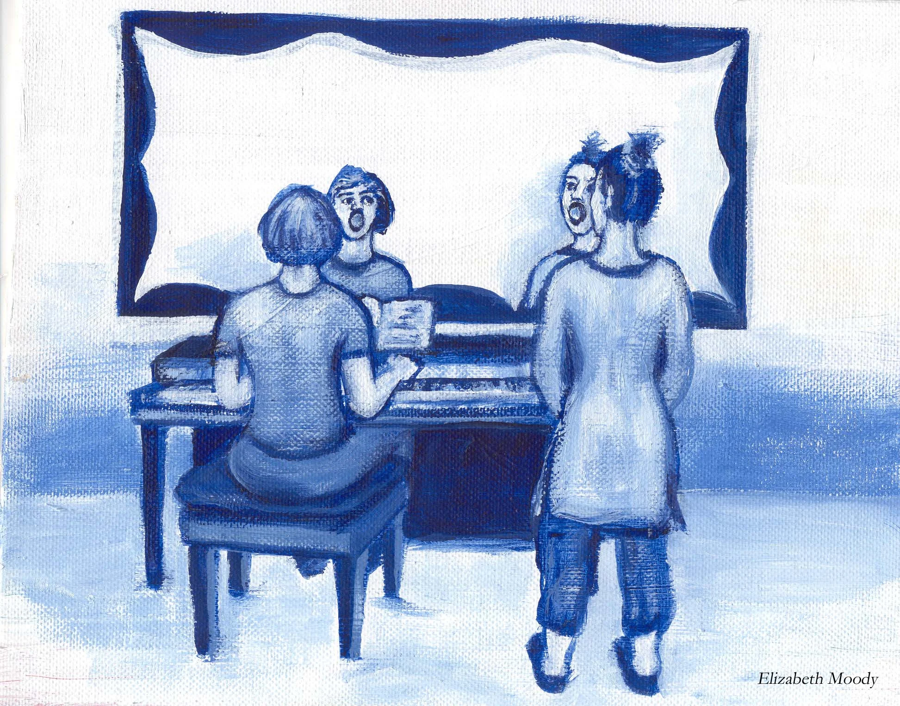

Escola de cant en línia
La teva classe de cant, en una finestra
Classes de tècnica vocal en directe, cara a cara amb la Carmen, amb la partitura compartida en pantalla. Des de Barcelona fins a qualsevol país.
«L’interessat pot trobar-se en qualsevol lloc i país.»Carmen Moreno
Vocalització · salts d’octava
Partitura compartida en pantalla Carmen
CarmenL’experiència
Com a l’aula, sense moure’t de casa
La classe en línia conserva l’essencial de la presencial: la Carmen et veu, t’escolta i corregeix el gest al moment.
Cara a cara
La Carmen observa la teva respiració, la mandíbula i els llavis mentre vocalitzes, igual que a l’aula.
Partitura compartida
Comparteix la partitura en pantalla per assenyalar l’interval exacte que esteu treballant.
El teu repertori
Els exercicis es trien segons els intervals de les obres que tu vols cantar.
Una hora, dues meitats
Mitja hora de vocalització i mitja aplicant el que s’ha treballat a la teva obra. El primer dia veuràs les animacions 3D del mètode.

Com funciona
Quatre passos fins a la teva classe
Sense comptes ni contrasenyes: parles directament amb la Carmen i reps el teu enllaç privat per a cada classe.
Sol·licita
Omple el formulari: què vols treballar, quan et va bé i des de quin país et connectes.
Confirma
La Carmen et respon amb el dia, l’hora i el format que millor encaixen amb tu.
Reserva
T’indica com pagar: transferència o targeta, amb opcions en la teva moneda si vius fora de la UE.
Entra i canta
La Carmen t’envia el codi de la teva classe. A l’hora acordada, l’escrius a l’aula en línia i comença la classe.
Abans de l’escola
Set cursos en línia que ho van demostrar
Entre 2020 i 2022 la Carmen va impartir set cursos en línia setmanals. Els resultats van ser tan bons que va decidir convertir l’experiència en la seva pròpia escola: un espai d’aprenentatge efectiu i professional, obert a qualsevol persona, a qualsevol lloc.
La seva experiència en l’ensenyament presencial ve de molt abans: des de 1995 treballa amb professionals, estudiants i intèrprets aficionats.
El que necessites
- Un espai on puguis cantar sense molestar ni ser molestat.
- Ordinador o tauleta amb càmera i micròfon. Uns auriculars ajuden.
- Connexió estable a internet.
- La partitura de l’obra que vulguis treballar, si la tens.
- Un got d’aigua i ganes de cantar.
La Carmen t’enviarà el codi de la teva classe. Escriu-lo a l’aula en línia a l’hora acordada. No el comparteixis: és només per a tu.
Sol·licitud
Demana la teva primera classe
En menys d’un minut. En acabar tindràs el missatge preparat per a la Carmen: envia’l per WhatsApp o per correu, o copia’l i envia’l com prefereixis.
- Resposta personal de la Carmen.
- Sense compromís fins que confirmeu l’horari.
- El web no guarda cap de les teves dades.
Preguntes freqüents
Sobre l’escola en línia
Quina plataforma de videotrucada es fa servir?
Google Meet. Escriu a l’aula en línia el codi que t’enviï la Carmen i la classe s’obrirà en una altra finestra. A l’ordinador no cal instal·lar res ni tenir compte. Al mòbil es fa servir l’aplicació gratuïta de Meet.
Se sent bé el cant per videotrucada?
Sí, amb una connexió estable. Abans de la primera classe convé provar el micròfon. Uns auriculars eviten l’eco quan la Carmen t’acompanya o canta un exemple.
Puc pagar des de fora d’Europa?
Sí. Quan contactis, la Carmen t’enviarà les opcions de pagament amb preus en la teva moneda local.
En quina llengua són les classes?
Les classes són habitualment en castellà. Si prefereixes una altra llengua, indica-ho a la sol·licitud.
Hi ha cursos gravats?
De moment, l’escola se centra en classes en directe. Mentrestant, pots començar amb la sèrie de vídeos didàctics i el llibre amb DVD.

La teva primera classe
La teva veu ja sap cantar. Ensenyem-li com.
Explica a la Carmen què vols cantar i què et costa. Et proposarà un punt de partida i un horari que encaixi amb tu, en línia o a Barcelona.